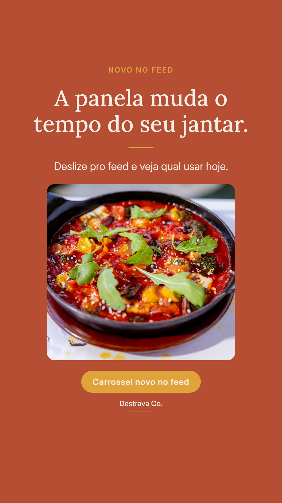
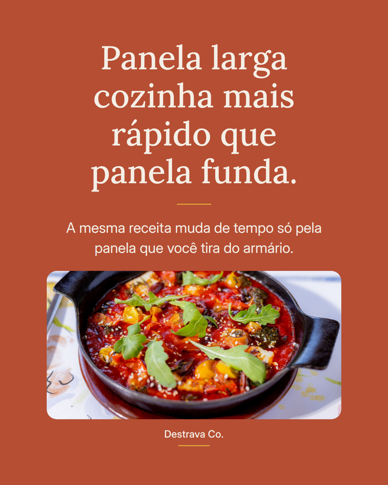
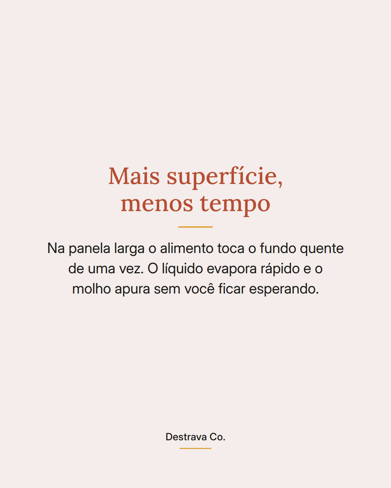
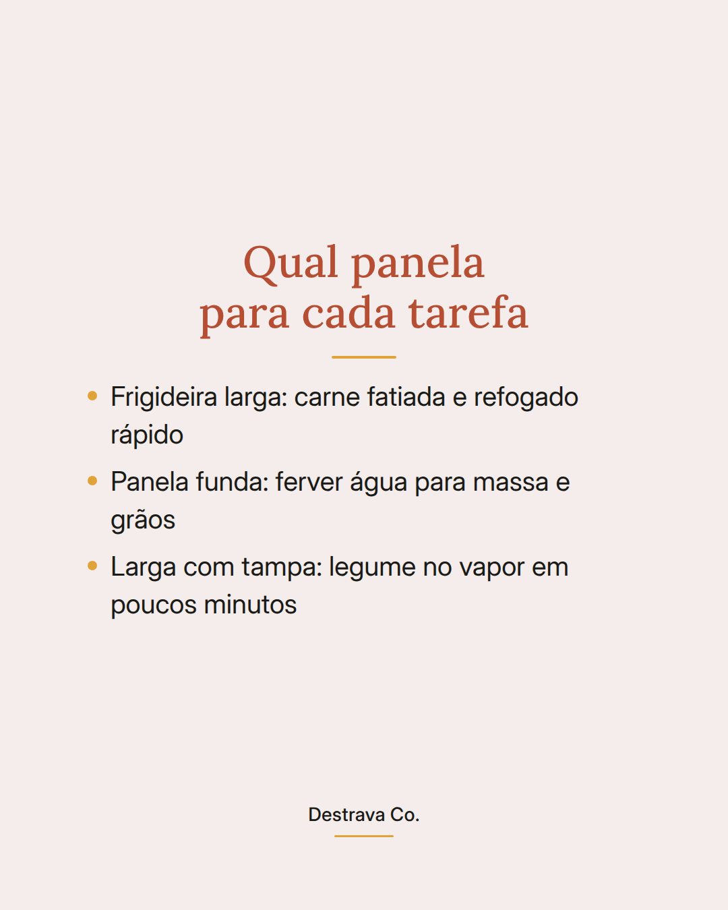
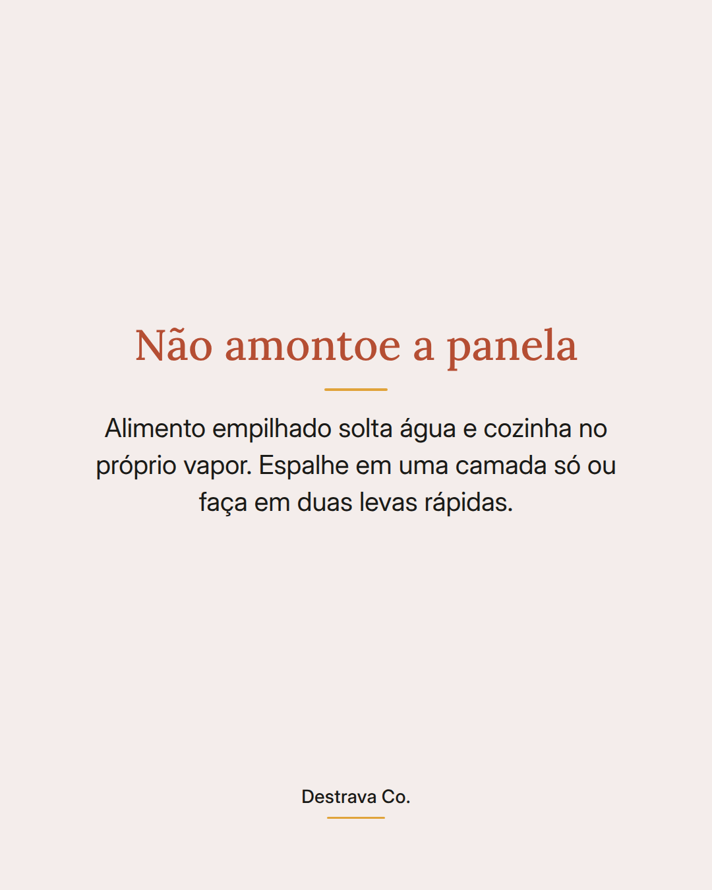

Panela larga cozinha mais rápido que panela funda, e isso muda o jantar de hoje.
Receita rápida depende menos de pressa e mais de superfície quente: quanto mais contato com o fundo, menos tempo de fogo.
Na frigideira larga a carne fatiada doura, o legume perde a dureza e o molho apura sozinho. Na panela funda a mesma quantidade fica amontoada, solta água e vira cozido sem graça.
Guarde a panela alta para ferver água de massa e grãos. Para refogado e proteína em tiras, puxe a mais larga que você tiver e espalhe tudo em uma camada só.
Salve para lembrar na hora de cozinhar e mande para quem sempre reclama que o jantar demora. Se quiser o passo a passo pronto, o PDF com vinte receitas rápidas está esperando você.